Little's Care App Design
- Kids,
- Education
04 Weeks
UX/UI Designer
30+
At-a-glance 👀
As a UX Designer for this project, I was focused on creating a user-centered design, creating a fun and interactive design of UI is a major challenge due to the age group of the target audience.
Why Little’s Care ?
Little’s Care allows kids to experience and learn about emotions and empathy while playing interactive games. There are many possible games for kids to play and learn to recognize their and others emotions such as matching similar emotions, spelling of emotions, understand emotions from given pictures, questions answering after a emotion and empathy story plays.
Problem
To encourage children to share their emotions and practice empathy and helping them in developing emotional intelligence, empathy, and the ability to express their feelings which is important for kids social and emotional development.
Solution
As a user experience designer, I saw an opportunity to provide my society a better chance to help kids to solve this underlying problem through an emotions and empathy oriented learning app and as a UI designer it was important for me that my target audience had fun while learning.
Goal
To help users to learn different types of Emotions and how are they expressed in a meaningful and interactive ways.
App Highlights
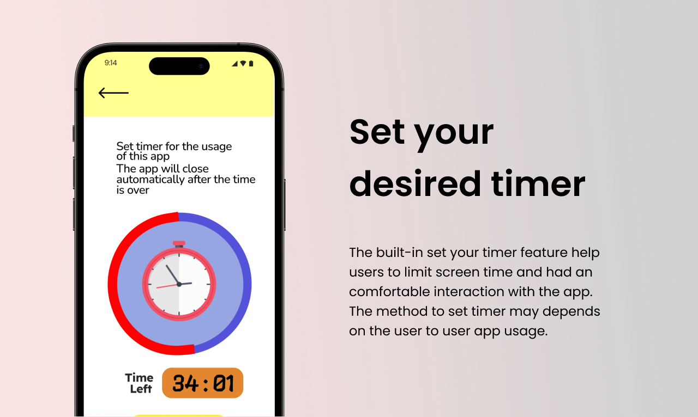 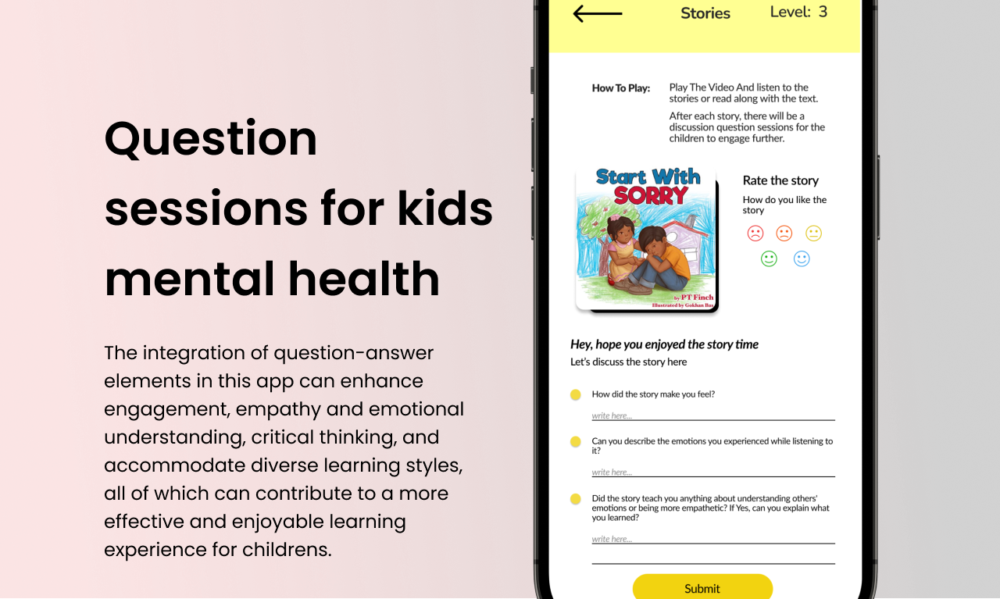 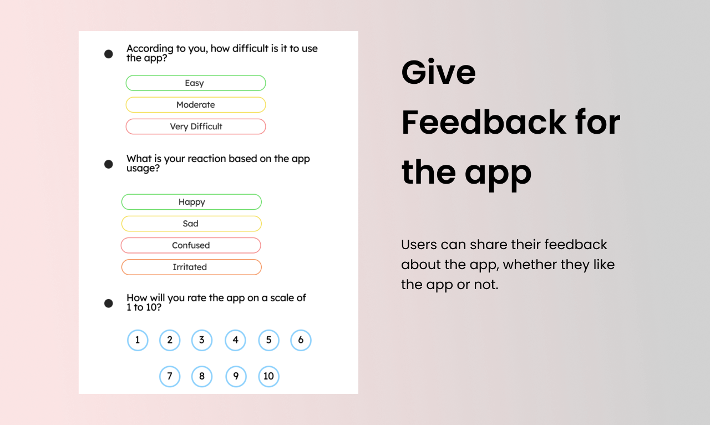DESIGN PROCESS:
After understanding the user needs and expectations, I designed an application based on kids likes and dislikes and created a low-fidelity prototype. I was responsible for both strategies and visual design. Design Process was non-linear method and helped me bringing the structure to my thinking. I ran user testing with 8 participants and incorporated the feedback to refine the design, resulting in an 85% satisfaction rate. Subsequently, I created a high-fidelity prototype.
Research and Analysis
Qualitative Research
For qualitative research I conducted interview with 5 parents having different age group of children. Through these interviews I could understand their perceptions of the app & figure out what are the problems faced by them as they find it a challenge for their kids to understand what & how they feel.
Quantitative Research
For quantitative research I conducted a 15 questions survey with parents to find out some basic idea about their perception on how much their kids are comfortable learning empathy and emotions through the app.
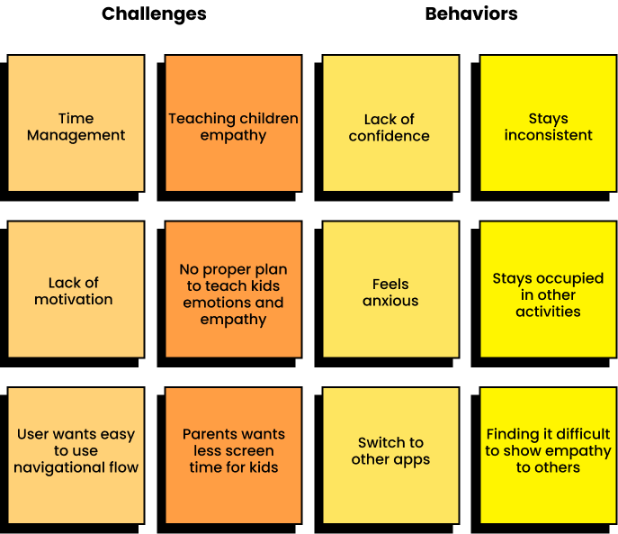 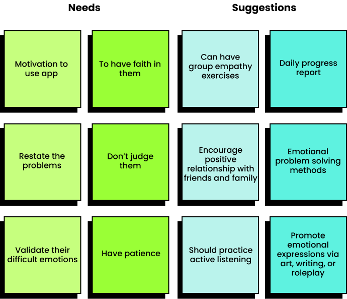User Research
I conducted user personas that are really crucial part for designing a pet adoption website for an animal shelter. They help in understanding the target audience better and tailoring the website to their needs.
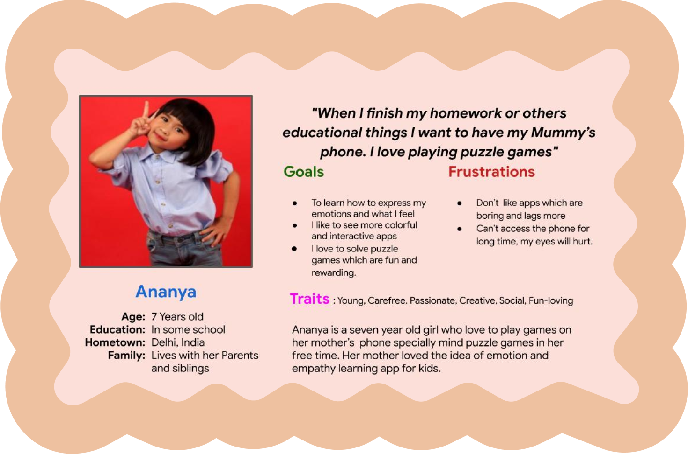I also created an empathy map to better illustrate the difficulty many user faces when they are in the process of developing emotional and empathetic understanding.
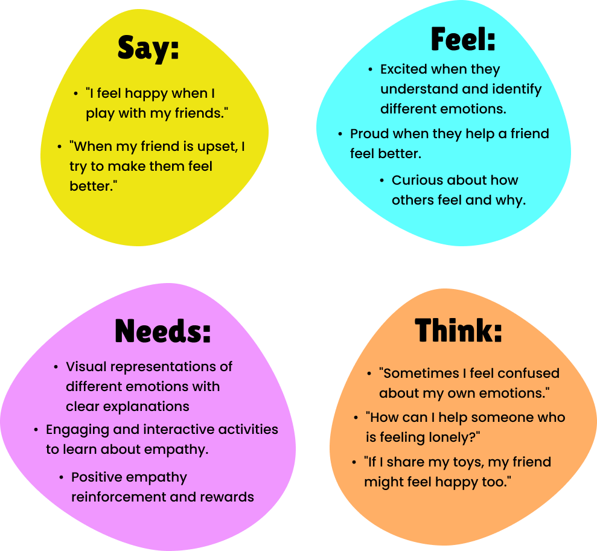Sketches
As a UX Designer for this project, I was focused on creating a user-centered design, creating a fun and interactive design of UI is a major challenge due to the age group of the target audience.
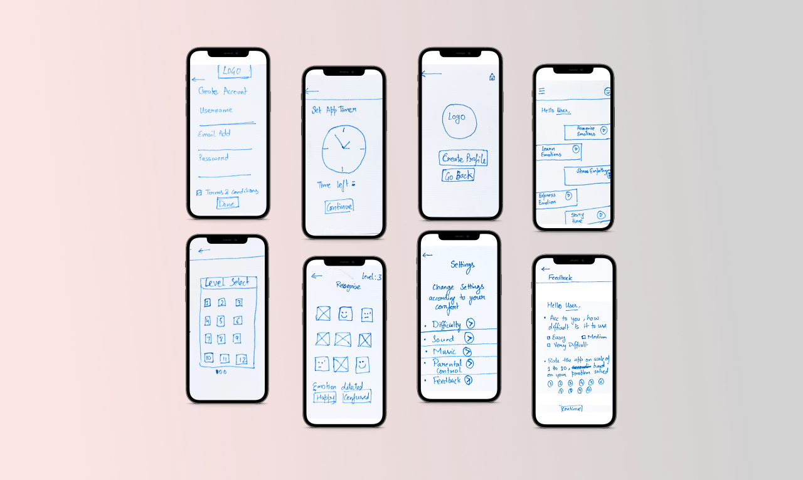Wireframes and Prototypes
The process below begins with my initial ideas wireframes, then moves to mockups, and finally to the high-fidelity prototype. In this simple version, you can see how the I approach solves the user needs.
.png)
MAJOR DESIGN ITERATIONS
I made some major modifications based on the feedback that I received from the user researches sessions. My goal was to create a product that was easy to understand, efficient to use, and enjoyable to interact with. To achieve this, I paid close attention to the user feedback and made changes accordingly.
🔶 Iteration 1. More captivating images attracts more audience
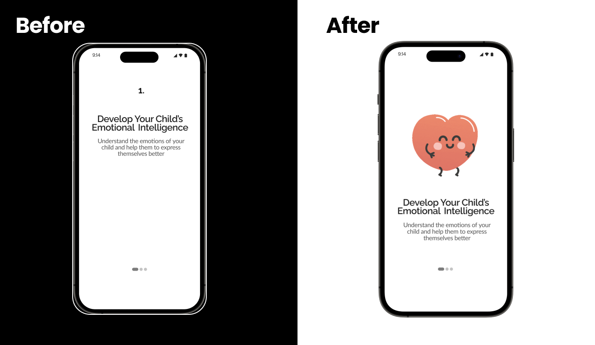Users stated that there should be more attractive images for kids engagement in the app.
🔶 Iteration 2. Good looking layouts are more effective
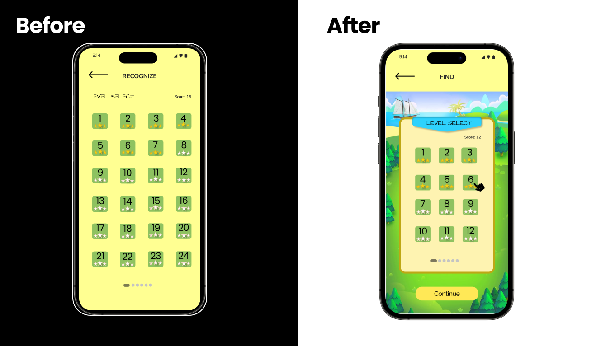Many users indicated that they would love to use clean and interactive layout designs, so they can interact easily with the app.
🔶 Iteration 3. Don’t ask Yes or No questions
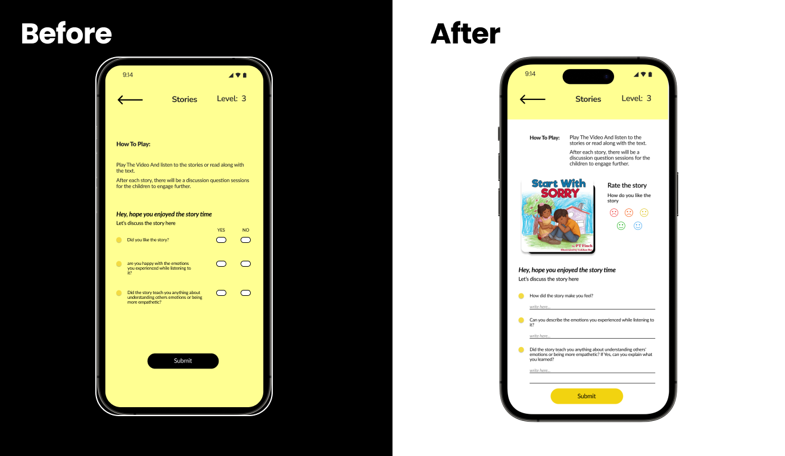In the previous design, questions were rated as either yes or no. However, it was clear that a simple yes/no options didn't accurately reflect the quality of the subject. Hence, I changed the subject in question answer format.
FINAL DESIGNS
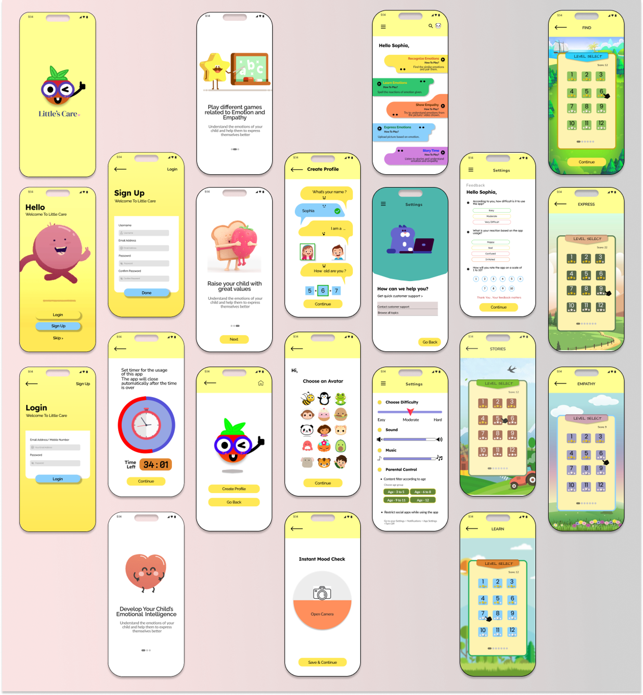ACCESSIBILITY CONSIDERATIONS
- Used adequate color contrast to make sure that the colors applied follow WCAG guidelines.
- Legible texts, audio narration of texts, consistent navigations, linear and consistent layouts.
- Used icons and images to make the app easier to use.
TAKEAWAYS
✔️ The project helped me to learn more about the process of a design thinking framework. Learned to do better visuals with the material design guidelines, by creating a small component library. Also learned how to empathize with the users in a better way.
✔️ This app will help the users to fulfill their needs of visiting an Art gallery at anytime and anywhere. All at one place.
✔️ The user needs and the user feedback is very important in the making of an successful app.